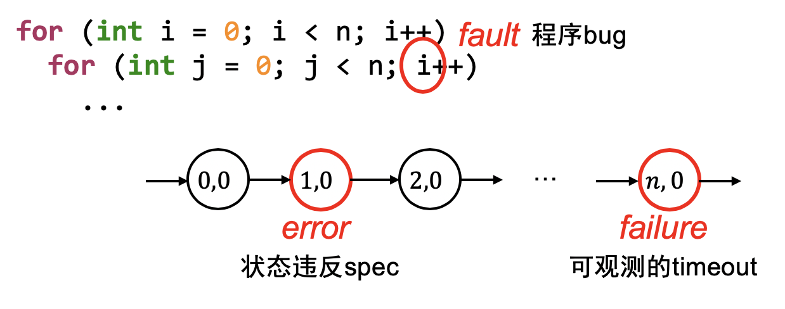

开始调试之前
摆正心态 (编程哲 ♂ 学)
不管是 crash 了，Wrong Answer 了，还是虚拟机神秘重启，都是自己背锅
你以为最不可能出 bug 的地方，往往 bug 就在那躺着
调试理论

“软件” 的两层含义
- 人类需求在信息世界的投影
- 理解错需求 → bug
- 计算过程的精确 (数学) 描述
- 实现错误 → bug
调试 (debugging)
- 已知程序有 bug，如何找到？
调试困难的根本原因
因为
- 需求 → 设计 → 代码 (状态机) → Fault (bug) → Error (程序状态错) → Failure
- 我们只能观测到 failure (可观测的结果错)
- 我们可以检查状态的正确性 (但非常费时)
- 无法预知 bug 在哪里 (每一行 “看起来” 都挺对的)

调试理论
调试理论：如果我们能判定任意程序状态的正确性，那么给定一个 failure，我们可以通过二分查找定位到
第一个 error 的状态，此时的代码就是 fault (bug)。
调试理论：推论
- 为什么我们喜欢 “单步调试”？
- 从一个假定正确的状态出发
- 每个语句的行为有限，容易判定是否是 error
- 为什么调试理论看起来很没用？
- 因为判定程序状态的正确性非常困难
- (是否在调试 DP 题/图论算法时陷入时间黑洞？)
- 因为判定程序状态的正确性非常困难
调试理论 (cont'd)
实际中的调试：
- 缩小错误状态 (error) 可能产生的位置
- 作出适当的假设
- 再进行细粒度的定位和诊断
最重要的两个工具
- printf → 自定义 log 的 trace
- 灵活可控、能快速定位问题大概位置、适用于大型软件
- 无法精确定位、大量的 logs 管理起来比较麻烦
- gdb → 指令/语句级 trace
- 精确、指令级定位、任意查看程序内部状态
- 耗费大量时间